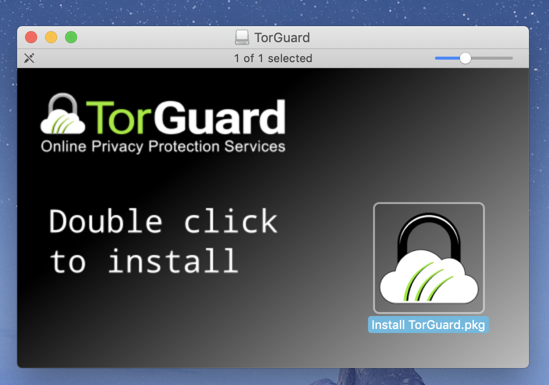
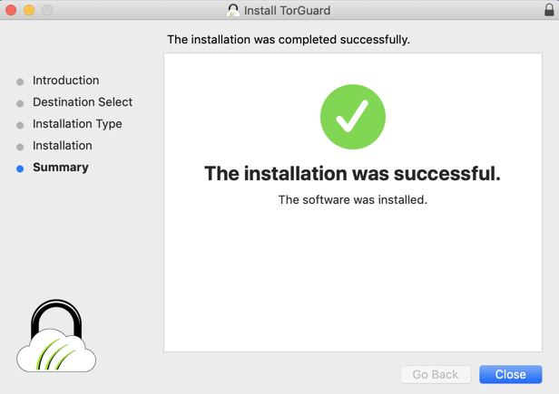
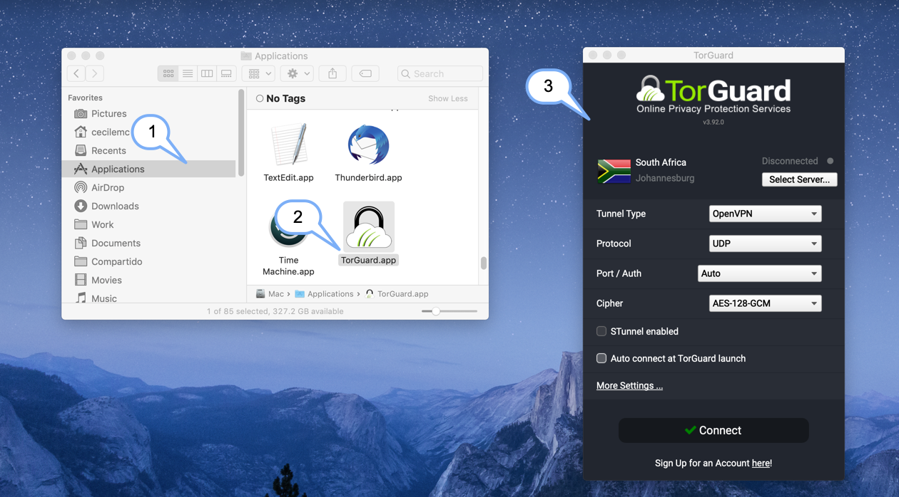
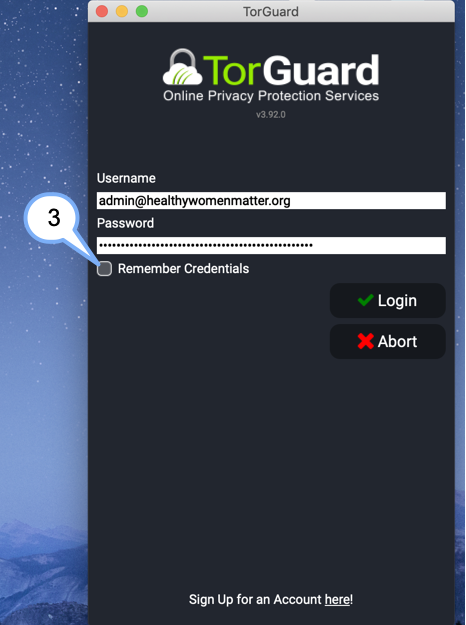
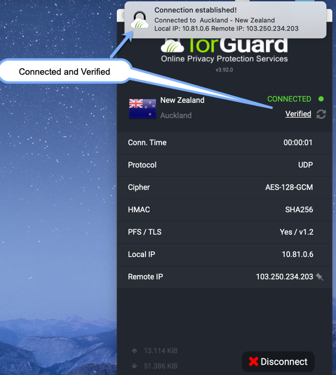
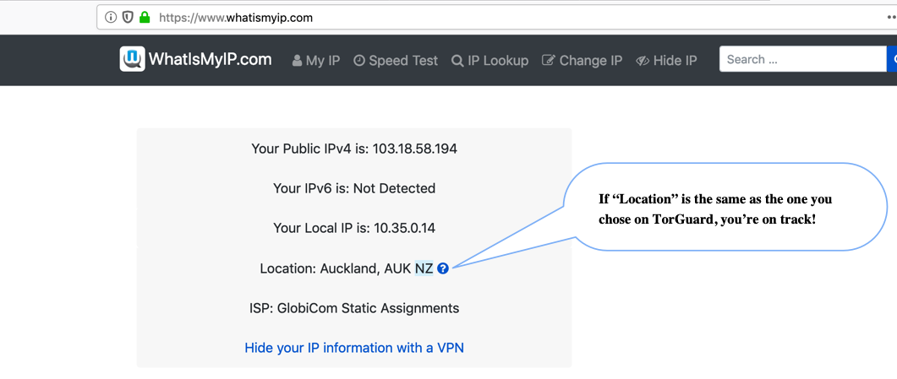

Download TorGuard’s latest version here: https://torguard.net/downloads.php
Be sure to download the correct version, on your Operative System (macOs)
Once the download finishes, open the file and double click on the icon, a wizard assistant will appears.
Follow the steps, and press [Close]
You can see Torguard is in your applications folder, click on the icon, a window will apear, you will see Tunnel Type, Protocol, Port / Auth and Cipher are set to give you a good balance between security and performance.
We recommend to not change these values.
The next step, is to access the app.
Username: admin@healthywomenmatter.org
Password: sustainer-durable-unwoven-unmarked-existing-gooey
It should then try connect you to the VPN - once you see a [Connected] status it should then read directly below it [Verified] this means you are 100% connected and secured.
To verify everything is working correctly, visit: https://www.whatismyip.com/ Go to the “My IP” section in the main menu, and if everything’s working fine, you will get your IP address and the place where your connection is coming from. Something as this:
To Disconnect just hit the [Disconnect] button at the bottom of the Connected window.